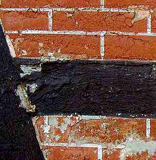
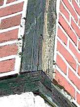
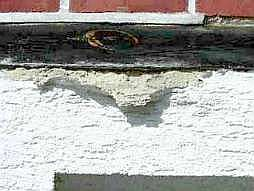
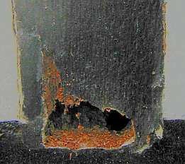

Altbautaugliche Verfahren und Baustoffe
Altbautaugliche Verfahren und BaustoffeDie Kapitel 9-10 wurden in folgende Unterkapitel aufgeteilt - 9. Natursteinrestaurierung: [1] [2]
[3] [4] [5]
[6]
Steinboden: [7]
Reinigungstechnik: [8]
10. Wandbildner im Vergleich: [9] [10] [11] [12] [13] [14] [15]
10.a Fachwerk/Blockbau: [16 - Die schärfsten Tipps zur Fachwerkrestaurierung: Woran erkennst Du einen Fachwerk-Experten?]
[17] [18] [19.1] [19.2]
Bodenaufbau/Holzboden: [20]
(aktualisiert 2.10.09)
8. Gefacheoberflächen der Fachwerkfassade müssen mit möglichst wasserabweisenden
Verputzen und Anstrichen blockiert werden. Am besten auf Lehmgefachen, denn Strohlehm soll ja Rauch
verzehren und feuchteausgleichend, feuchtepuffernd und überhaupt sein - ein Alleskönner. Deswegen dichten kluge Leute, und nur
solche finden wir beim Sanieren, Umbauen, Modernisieren und Instandsetzen von Fachwerkhäusern, auch gerne, vorzugsweise und unbedingt
mit Lehm ab, wenn schon wärmegedämmt und wärmegedichtet werden soll und muß, egal, wat dat kost: Deiche + Teiche,
Fundamente und Baugruben, Deponien und die zu vermorschende Luftdicht-Fachwerk-Bude. So lehmnazibraunverschmiert macht EnEV-Denkmalpflege erst
so richtig Spaß.
Deswegen haben Sie auch immer den Amtlichen Denkmalpfleger/Denkmalschützer auf Ihrer Seite, wenn Sie ihr einst so dünnes und
winters perfekt trockenzuhaltendes Fachwerkwändle nun mit ewig nasser Leichtlehmpampe auch innen teuerst berucksacken (wir kommen noch drauf).
Denn wir können ja heute alles besser, als die doofen Meister von anno dunnemals. Und die hervoragendsten Denkmalpfleger machen sich
nun landauf und landab dran, für die Bedienung der Lehmpampenszene und deren professionelle Vergewaltigung der einst sinnvoll
konstruierten Fachwerkwand mittels Leichtlehm/ Dämmlehm extra Fördermittel einzufordern, alles nach dem so arg zeitgeildoofen
Motto: "Denkmalschutz ist Klimaschutz ist Denkmalschutz" oder so.
Wenn's dann auch im Bio-Fachwerk-Haus dank denkmalgestützter und zuschußgeförderter Energieeffizienz-Sanierung so richtig angenehm muffig
schimmelt und pilzt, krabbelt und mieft - eben EnEV + Öko = Denkmalpflege heute!
Gut ist auch Bims und Gasbetonstein für's Gefach. Das hält auch wie Lehm das Wasser zurück ohne Ende und will nie richtig
trocknen wie Ziegel oder Luftkalkmörtel. Den Energiespar-Denkmalpfleger haben Sie dabei bestimmt auch auf Ihrer Seite. Denn mit
derartigen Ersatzbaustoffen spart er ja Förderung bzw. Zuschußmittel für sonstige Angriffe auf den Denkmalbestand.
Dann auf den Lehm unbedingt wassersaugenden/wasserrückhaltenden zementären und / oder kunstverharzt-trocknungsblockenden
Spezial-Putz drauf, bis auf Null auf die rohen Holzflächen aufgeschmiert und bitte immer ohne kapillarbrechenden Kellenschnitt. Die damit verringerte
Regenwasseraufnahme im Gefach garantiert die maximale Regenwasserbeflutung der Kapillarfuge Gefach-Holz. Von dort wird es dann auch
nicht mehr übers Gefach kapillar rausgetrocknet. Daß "diffusionsoffen-kapillardichte" Mörtel und Anstriche sehr wohl
täglich Kondensat und nach ihrer baldigen Versprödung durch ihre Kapillarrißsysteme auch Regen aufnehmen, wird vornehm
verschwiegen. Denn sonst könnte der Fachwerkbesitzer ja fragen, wie eingedrungene Nässe durch derartige Blockaden wieder
möglichst schnell herauskommen soll?



Die Augenauswischerei mit Dampfdiffusionswerten hat für die Bauteiltrocknung Null Bedeutung. Der Kapillartransport von Wasser ist nämlich um den Faktor 1000 größer. Das verschweigen die Farb- und Putzheinis. Fachwerkexperten wären ja schön blöd, wenn sie nicht für ständigen Nachschub von Sanierungsschäden sorgen würden. Warum auch traditionsbewährte Luftkalkmörtel, wenn es salzreiche traß-, zement-, NHL-hydraulkalk- und kunstharzverschnittene Pampen gibt, die begierig die durch Kondensat bzw. Regen eingedrungene Feuchte zurückhalten, bevor sie knallhart von der Wand springen? Und im Falle der Dispersionstunken beste Lebensgrundlagen für Beschimmelung bieten (pH-Werte so um 8 herum).
9. Altanstriche, meist auf Kunstharzbasis, werden teuer mit holzschädigenden Techniken (Abschleifen, Abdampfen, Ab-(wirbel-)strahlen, Abfräsen, Abbrennen, Abbeizen mit CKW/Alkali-Beizen) abgenommen. Warum sollte man auch chemiefreie Entlackungstechnik ohne Feuchte, Hitze und Dreckbelastung benützen?

10. Neuanstrich der Fachwerkhölzer mit schichtbildenden wasser- und trocknungsblockierenden harzhaltigen Anstrichsystemen. Sie folgen weder den künftigen Holzbewegungen, noch lassen sie die in Risse eindringende Nässe möglichst schnell raus. Vorsichtshalber bitte nur die Sichtfläche beschichten. So kann über die unbeschichteten Seiten und die dort hingeschmierten Trockenblockermörtel möglichst viel Wasser in das Holz reinfließen und die dichten Anstriche zu volldurchmorschten Schweinsblasen aufpumpen. Warum auch den menschlichen (Handwerk+Fachwerkexperten), tierischen (Insekten) und pflanzlichen (Pilze) Holzschädlingen mit trocknungsfördernden und wartungsfreundlichen reinen Ölanstrichen die Lebensgrundlage - feuchtes Holz und versprödende, wasserstauende und schichtbildende Anstriche - entziehen? Wir sind doch alle Freunde! Und der Bauherr hat den schwarzen Peter (auch A...karte genannt ;-))
11. Heizung mit wanddurchfeuchtender Umluftverpestheizung, während winterlicher Bauphase getoppt durch wasserspeiende Gasheizlüfter. Niemals Hüllflächentemperierung, die Kondensatdurchfeuchtung, Beschimmelung, Hausschwammbefall und erhöhte Lüftungswärmeverluste ausschließt. Wie bekommt man denn sonst den heulenden Schwamm (Serpula lacrymans) in die kondensatgefährdeten Balkenauflager, wenn nicht durch falsches Konvektionsheizen? Und wenn schon Strahlungsheizung, dann maximal teuer und schlau: Erst nasse Lehmpampen dem armen Fachwerkwändlein vorgepampt: Dann im nassen Lehmputz (Lehminnenschale mit holzhackverscnitzelter Leichtlehm-"Isolierung") energievergeudende Heizschlangen ohne Ende, damit das erste Näglein das System lahmlegt, eine künftige Technikerneuerung einem Hausabbruch gleichkommt. Und dann dank irrer Wärmeableitung und Wärmewegspeicherung in der unsinnigen Lehmschale dreifach Heizkosten als nötig, um das arme Fachwerkwändlein im Inneren kräftig auf Schwung zu bringen. Das ganze dann dem vertrauensseligen Bauherrn als "Wärmedämmung" und Energieeinsparung" verkauft. Expertengestützt von "Altbaufachleuten" (vielleicht an der Kostensteigerung beteiligt?). Warum auch einfach, wenns doch so dolle kompliziert geht!
Weiter? Hier!